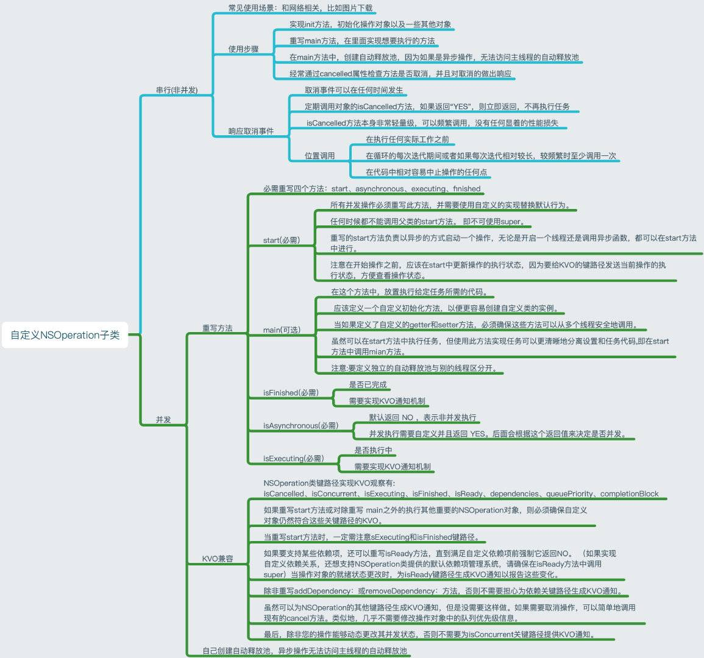

NSOperation 和 NSOperationQueue 相关知识
NSOperation
是一个抽象类，需要进行自定义子类去实现方法，系统提供了`NSBlockOperation `和`NSInvocationOperation`两个方法，一个类似block回调NSOperation,一个类似代理方式执行
NSBlockOperation
在主队列中 blockOperationWithBlock 一定会在主线程执行 addExecutionBlock会在不同的子线程中执行且不会有顺序
在自定义队列中 blockOperationWithBlock addExecutionBlock 均在子线程执行
NSBlockOperation *op2 = [NSBlockOperation blockOperationWithBlock:^{
NSLog(@"%@---testNSBlockOperation",[NSThread currentThread]);
}];
[op2 addExecutionBlock:^{
NSLog(@"hello1 ------ %@", [NSThread currentThread]);
}];
[op2 addExecutionBlock:^{
NSLog(@"hello2 ------ %@", [NSThread currentThread]);
}];
[op2 addExecutionBlock:^{
NSLog(@"hello3 ------ %@", [NSThread currentThread]);
}];
2020-04-06 20:56:08.851883+0800 Multithread[98123:6743774] <NSThread: 0x600001c96200>{number = 1, name = main}---testNSBlockOperation
2020-04-06 20:56:08.851885+0800 Multithread[98123:6743944] hello2 ------ <NSThread: 0x600001cf9740>{number = 3, name = (null)}
2020-04-06 20:56:08.851889+0800 Multithread[98123:6743939] hello1 ------ <NSThread: 0x600001c31580>{number = 7, name = (null)}
2020-04-06 20:56:08.851909+0800 Multithread[98123:6743941] hello3 ------ <NSThread: 0x600001cf7480>{number = 6, name = (null)}
NSInvocationOperation
NSInvocationOperation *op3 = [[NSInvocationOperation alloc] initWithTarget:self selector:@selector(testInvocationOperation) object:nil];
[op3 start];
如果没有添加到自定义队列中的话，直接使用了start默认会在主线程中执行，添加到自定义队列中会在子线程中执行
<NSThread: 0x600002fd61c0>{number = 1, name = main}---NSInvocationOperation
设置优先级
typedef NS_ENUM(NSInteger, NSOperationQueuePriority) {
NSOperationQueuePriorityVeryLow = -8L,
NSOperationQueuePriorityLow = -4L,
NSOperationQueuePriorityNormal = 0,
NSOperationQueuePriorityHigh = 4,
NSOperationQueuePriorityVeryHigh = 8
};
多次运行代码，我们发现优先级高的不一定会早于优先级低的任务执行，这就是我们需要注意的另外一点：优先级高的操作先执行的概率大，但并不表示必然先执行。设置优先级的代码要在操作放入操作队列之前，否则是不起作用的或者说会产生不利的影响。
[op3 setQueuePriority:NSOperationQueuePriorityVeryHigh];
线程依赖
[op2 addDependency:op1];
[op1 addDependency:op2];
依赖关系必须在添加到操作队列之前设置才有效果，如果任务之前依赖的话可以采用 addDependency方法，但是注意不要产生循环依赖，就会出现死锁问题，互相等待
NSOperationQueue
自定义NSOperation 主要复写main start方法，主要main方法中需要先校验该Operation 是否被cancel
//主线程 主队列
NSOperationQueue *downloadQueue = [NSOperationQueue mainQueue];
//自定义队列 子线程
NSOperationQueue *downloadQueue = [NSOperationQueue new];
downloadQueue.maxConcurrentOperationCount = 3;
串行队列与并行队列 如果maxConcurrentOperationCount 为1的话就是串行队列 大于1为并行队列，一般建议小于5 否则会出现性能问题。
maxConcurrentOperationCount并不是指队列中同时能运行的线程数，而是queue中最多能并发运行的operation个数。如果是这个意思，那为什么不叫maxConcurrentThreadCount呢。一个operation可能有多个任务，即使maxConcurrentOperationCount=1，也会有多个线程。
如何自定义 NSOperation
需要重写start()、isAsynchronous、isExecuting、isFinished
isAsynchronous需要返回YES，代表操作队列是并发的
isExecuting该状态应该维护，确保其他可以被调用者正确监听操作状态，应该确保该操作是线程安全的
isFinished该状态确保操作完成或者取消的时候，都被正确的更新，不然，如果操作不是完成状态，则操作队列不会把改操作从队列中移除，不然会导致依赖其的操作任务无法执行，该操作应该也确保该操作是线程安全的
isExecuting和isFinished都必须通过KVO的方法来通知状态更新
在start方法开始的时候，应该监听isCancelled状态，如果已经被取消直接结束操作，避免对于的开销
- (void)start {
@synchronized (self) {
self.executing = YES;
if (self.isCancelled) {
self.executing = NO;
self.finished = YES;
}
dispatch_after(dispatch_time(DISPATCH_TIME_NOW, (int64_t)(5 * NSEC_PER_SEC)), dispatch_get_main_queue(), ^{
self.executing = NO;
self.finished = YES;
});
}
}
- (void)setFinished:(BOOL)finished {
[self willChangeValueForKey:@"isFinished"];
_finished = finished;
[self didChangeValueForKey:@"isFinished"];
}
- (void)setExecuting:(BOOL)executing {
[self willChangeValueForKey:@"isExecuting"];
_executing = executing;
[self didChangeValueForKey:@"isExecuting"];
}
- (BOOL)isAsynchronous {
return YES;
}
